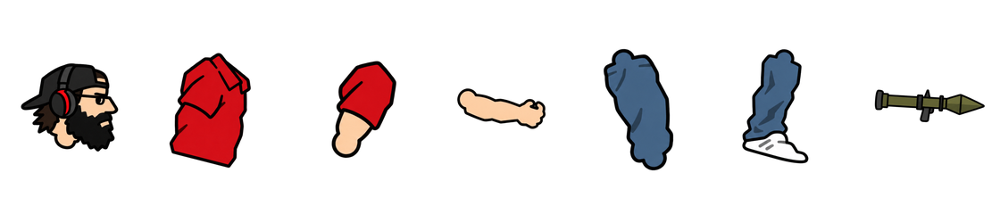
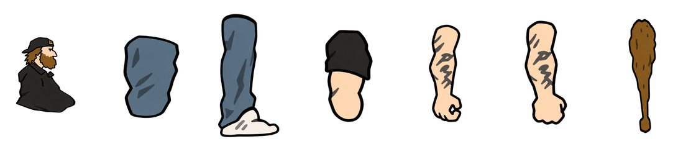

← Back to gameAGE OF NUT · full-body animations
Loading full-body frames…
Both characters are posed 1:1 from the original Age of War timelines · previous pack
Habibi · 1:1 rig
Built on the original military rifleman's seven pieces with his RPG in place of the rifle, moved by that unit's own transforms. Average build. Idle 94 · walk 47 · attack 53 · die 90 frames at 40 fps; the rocket leaves on attack frame 10.

- Head
- Torso
- Upper arm ×2
- Forearm ×2
- Thigh ×2
- Lower leg + shoe ×2
- RPG launcher
Download Habibi 1:1 pack · Habibi notes · Manifest · Sheets: idle · walk · attack · die · GIF
HutchMF · 1:1 rig
Same seven pieces the original cave melee unit is built from, moved by the original game's own frame-by-frame transforms. Noticeably fat build. Idle 50 · walk 43 · attack 40 · die 24 frames at 40 fps, hit on attack frame 20.

- Head + torso
- Thigh ×2
- Lower leg + foot ×2
- Upper arm
- Forearm · grip
- Forearm · fist
- Club
Download Hutch 1:1 pack · Hutch notes · Manifest · Sheets: idle · walk · attack · die · GIF